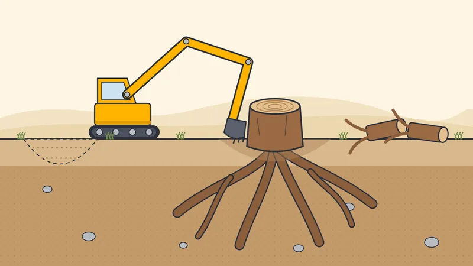

Dessouchage : prix 2027 d'une souche, rognage ou arrachage à la pelle
Devis gratuit sous 24 h 07 45 14 20 49 WhatsAppNotre service : terrassement
En bref
- Quel est le prix pour enlever une souche d'arbre ? Au rognage, de 80 à 150 € sous 30 cm de diamètre, 150 à 300 € entre 30 et 50 cm et 250 à 500 € entre 50 et 80 cm, plus 50 à 150 € de déplacement.
- Combien coûte le rognage d'une souche ? De 80 à 150 € sous 30 cm jusqu'à 250 à 500 € entre 50 et 80 cm, plus un déplacement de 50 à 150 €. Certains rogneurs facturent 4 à 7 € par centimètre de diamètre.
- Rognage ou arrachage : que choisir ? Le rognage suffit sous une pelouse ou en fond de jardin : moins cher, il laisse les racines en terre. Sous une maison, une piscine ou une allée, seul l'arrachage à la pelle, suivi d'un remblai compacté, évite les tassements.

Faire disparaître une souche coûte 80 à 800 € selon son diamètre et la méthode, en prix indicatifs 2027 hors taxes. Dans le pays d'Aix, où beaucoup de terrains à bâtir se gagnent sur la pinède et la garrigue, le bon choix dépend pourtant moins du prix que de l'usage futur du sol : rogner la souche, l'arracher à la pelle ou la laisser pourrir. Ce guide compare les trois méthodes, donne les prix par souche et au m², et chiffre un cas complet : six pins de 40 cm sur un terrain de 600 m².
Sommaire
- Dessoucher : quand c'est indispensable, quand c'est superflu
- Rognage, arrachage ou dévitalisation : trois méthodes
- Prix d'une souche selon son diamètre
- Prix au m² pour dessoucher un terrain entier
- Évacuer les souches : le poste qu'on oublie
- Reboucher et compacter le trou
- Exemple chiffré : six pins de 40 cm sur un terrain de 600 m²
- Pins, chênes, oliviers : chaque essence a ses racines
- Défrichement : quand faut-il une autorisation ?
- Questions fréquentes
- À lire aussi
Dessoucher : quand c'est indispensable, quand c'est superflu
Abattre un arbre ne règle que la partie visible : la souche reste, avec un réseau de racines qui s'étend souvent au-delà de l'aplomb des branches. Le dessouchage est indispensable :
- Sous une construction. Une racine laissée sous des fondations ou un dallage pourrit et laisse un vide : tassements, puis fissures quelques années plus tard. Les règles de l'art imposent de purger le sol de sa matière organique.
- Sous une piscine, une allée ou une terrasse. Les racines traçantes d'un pin soulèvent margelles, enrobé et pavés ; une souche qui se décompose les fait au contraire s'affaisser.
- Sur un terrain à niveler ou à engazonner, où une souche affleurante gêne la tondeuse et où un rejet de chêne finit par repercer le gazon.
En fond de jardin ou dans une haie, la souche peut rester ou être simplement rognée. Et après un débroussaillement obligatoire, rien n'impose d'arracher les souches des arbustes coupés : la réglementation demande de rompre la continuité de la végétation, pas de dessoucher.
Rognage, arrachage ou dévitalisation : trois méthodes
Le rognage à la dessoucheuse
La rogneuse de souches broie le bois avec un disque denté jusqu'à 20 à 30 cm sous le sol. Les modèles compacts passent par un portillon de 80 cm et travaillent sur une pelouse sans la défoncer. Mais les racines restent en terre et pourriront pendant des années : parfait sous un gazon, exclu sous une construction. En Provence, les souches poussées dans la caillasse ont souvent englobé des pierres qui cassent les dents de la machine, et beaucoup de rogneurs les majorent. En location, comptez de l'ordre de 150 à 250 € la journée pour un outil lourd qui projette des éclats.
L'arrachage à la pelle mécanique
Une mini-pelle de 1,5 à 5 t suffit jusqu'à 50 ou 60 cm de diamètre, une pelle de 8 t au-delà. Le conducteur dégage le pied, tranche les grosses racines, fait levier, puis secoue la souche pour laisser la terre sur place. C'est la seule méthode qui rend un sol sain pour construire. En contrepartie, elle ouvre un trou d'un à deux mètres de large, demande un accès (une micro-pelle mesure 70 cm à 1 m de large, une 3 t 1,50 à 1,70 m) et, comme tout travail mécanique dans le sol, des déclarations DT-DICT préalables. Pour deux ou trois petites souches, louer une mini-pelle peut se tenir ; au-delà, la prestation avec chauffeur revient vite moins cher.
La dévitalisation
Elle consiste à laisser la souche mourir et pourrir sur place. Depuis 2019, les particuliers n'ont plus accès aux produits phytosanitaires de synthèse, donc aux dévitalisants chimiques classiques ; restent les accélérateurs de décomposition vendus en jardinerie, pour quelques dizaines d'euros, et le bâchage opaque contre les rejets. C'est presque gratuit mais cela se compte en années, et un chêne vert ou un olivier continue de rejeter entre-temps. À réserver à une souche isolée au fond du jardin. Sel, eau de Javel et huile de vidange polluent le sol sans aller plus vite.
Prix d'une souche selon son diamètre
Le diamètre se mesure à la coupe, au ras du sol. Les prix ci-dessous sont des prix indicatifs du marché pour une souche accessible en sol courant ; les rogneurs facturent en plus un déplacement de 50 à 150 €.
| Diamètre de la souche | Rognage (dessoucheuse) |
|---|---|
| Moins de 30 cm | 80 à 150 € |
| 30 à 50 cm | 150 à 300 € |
| 50 à 80 cm | 250 à 500 € |
| Plus de 80 cm | Sur devis |
| Déplacement du rogneur | 50 à 150 € |
L'arrachage à la pelle ne se chiffre pas au diamètre mais à la souche : 100 à 300 € par souche quand l'engin est déjà sur place pour en traiter plusieurs, 400 à 800 € pour une souche isolée, amenée de l'engin comprise (prix indicatifs HT, hors évacuation et rebouchage). Au-delà de 50 à 60 cm de diamètre, il faut une pelle de 8 t.
Certains rogneurs facturent 4 à 7 € par centimètre de diamètre, ce qui recoupe le tableau. Le devis monte avec l'essence (chêne et olivier coûtent plus que le pin), le sol (un coteau calcaire oblige à dégager la roche) et l'accès (contre un mur ou une canalisation, on finit à la main). Il baisse avec le nombre : dès cinq ou six souches, on raisonne à la journée de pelle, 500 à 700 € avec chauffeur pour une mini-pelle de 1,5 à 5 t, plus 150 à 300 € de transport aller-retour dans un rayon de 30 km.
Si l'arbre n'est pas encore abattu, demandez à l'élagueur de laisser un mètre de tronc : la pelle s'en sert de levier. Pour un rognage, au contraire, faites couper au plus bas.
Prix au m² pour dessoucher un terrain entier
Quand toute une parcelle est à reprendre (ancienne pinède, friche, garrigue avant un permis de construire), le prix se donne au m², selon la densité des souches. Arbres déjà abattus :
| Type de parcelle | Travaux compris | Prix au m² |
|---|---|---|
| Friche, souches de moins de 20 cm | Gyrobroyage, arrachage léger, végétaux laissés en andain | 1 à 3 €/m² |
| Garrigue dense (chênes kermès, cistes, jeunes chênes verts) | Dessouchage à la pelle, évacuation des végétaux | 3 à 6 €/m² |
| Pinède ou chênaie déjà abattue | Dessouchage complet, tri terre et souches, évacuation, régalage | 4 à 10 €/m² |
| Décapage de la terre végétale ensuite | 15 à 25 cm, terre mise de côté | 3 à 6 €/m² |
Le décapage n'est pas un doublon : après le dessouchage, le décapage de la terre végétale enlève la couche superficielle et ses radicelles, avant le terrassement proprement dit. Décapage, journée de pelle, évacuation et remblai reprennent notre grille de tarifs du terrassement ; les prix propres au dessouchage sont des fourchettes de marché, à confirmer après visite.
Évacuer les souches : le poste qu'on oublie
Avec ses racines, une souche de pin de 40 cm occupe 0,5 à 1 m³ de benne, même secouée. Et ce n'est pas un déchet inerte : elle part en filière de déchets verts ou de bois, pas en décharge de terres. Comptez 350 à 550 € la benne de 8 m³ de végétaux, qui prend six à dix souches moyennes, et 500 à 800 € pour 15 m³, selon notre guide sur l'évacuation des gravats et déblais. Beaucoup de déchèteries refusent les souches ; les plateformes de compostage les acceptent, plus cher que les déchets verts ordinaires et débarrassées de leur terre.
La terre, elle, reste sur le terrain pour le rebouchage : partie avec les souches, elle se paierait au tarif des végétaux. En excédent, elle s'évacue comme déblai inerte, 25 à 35 €/m³ pour une décharge à moins de 10 km. Quant à brûler les souches, le brûlage des déchets verts est en principe interdit aux particuliers, et l'emploi du feu strictement encadré dans les Bouches-du-Rhône.
Reboucher et compacter le trou
Après un rognage, on retire une partie des copeaux, qui en se décomposant privent le gazon d'azote, et l'on comble la cuvette à la terre végétale en léger dôme. Après un arrachage, le trou d'une souche de 40 cm fait un à deux mètres de large et 50 à 80 cm de profondeur, soit 0,5 à 1 m³ à combler :
- Sous un jardin, la terre du site puis 20 cm de terre végétale ; si elle manque, une terre de remblai saine coûte 15 à 35 €/m³ livrée.
- Sous une maison, une allée ou une piscine, jamais de terre végétale ni de copeaux : du tout-venant 0/80 (20 à 40 €/m³ livré), compacté par couches de 20 à 30 cm, la mise en œuvre ajoutant 10 à 25 €/m³.
Un remblai non compacté se tasse de 10 à 20 %, et le dallage suit. Le détail est dans notre guide du remblai de terrain.
Exemple chiffré : six pins de 40 cm sur un terrain de 600 m²
Un terrain de 600 m² en lisière de pinède, six pins d'Alep d'environ 40 cm déjà abattus, une maison à construire ; quatre souches sont sous la future maison et l'allée. Arrachage des six à la pelle :
| Poste | Calcul | Montant HT |
|---|---|---|
| Mini-pelle 3 à 5 t avec chauffeur | 1 journée | 550 à 700 € |
| Amenée et repli de l'engin | Transport aller-retour (moins de 30 km) | 150 à 300 € |
| Évacuation des souches | 3 à 6 m³, 1 benne de 8 m³ | 350 à 550 € |
| Rebouchage en tout-venant 0/80 | 6 trous de 0,7 m³ ≈ 4 m³ × 30 à 65 € (fourniture et compactage) | 120 à 260 € |
| Total | Soit 195 à 300 € par souche | 1 170 à 1 810 € |
En rognant les six souches, on paierait 6 × 150 à 300 €, soit 900 à 1 800 €, plus 50 à 150 € de déplacement et 30 à 60 € de terre végétale : 980 à 2 010 € HT, sans économie sur l'arrachage. Et quatre souches laisseraient leurs racines sous la maison et l'allée. Rogner seulement les deux du jardin n'économiserait presque rien, la pelle étant là pour la journée. Le décapage de la plateforme de la maison (par exemple 200 m² à 3 à 6 €/m², soit 600 à 1 200 €) relève, lui, du devis de terrassement.
Des souches à enlever dans les Bouches-du-Rhône ?
STP Terrassement dessouche, décape et terrasse les terrains à bâtir dans tout le pays d'Aix et jusqu'à Marseille. Indiquez le nombre de souches et leur diamètre : nous vous rappelons.
Pressé ? 07 45 14 20 49 ou WhatsApp
Pins, chênes, oliviers : chaque essence a ses racines
Le pin d'Alep a des racines traçantes qui s'étalent sur plusieurs mètres et se glissent dans les fissures du calcaire. Il ne rejette pas de souche : hors des zones à construire, un rognage suffit.
Les chênes, vert ou pubescent, ont un pivot profond, un bois très dur, et rejettent vigoureusement : rognés en surface, ils repartent. Il faut les arracher, ou couper les rejets pendant deux ou trois saisons.
L'olivier a la souche la plus dense et la plus lourde, et rejette abondamment. S'il est sain, demandez d'abord s'il peut être transplanté en motte : il le supporte bien, et un sujet adulte a de la valeur.
Défrichement : quand faut-il une autorisation ?
Couper des arbres n'est pas défricher. Au sens du Code forestier, le défrichement détruit l'état boisé d'un terrain et met fin à sa destination forestière : c'est ce que fait le dessouchage d'une parcelle boisée pour y construire. Au-delà d'un seuil de surface du massif boisé fixé dans chaque département, il demande une autorisation préfectorale instruite par la DDTM, à solliciter avant le permis de construire, dont le dossier doit en faire état. Des exemptions existent, notamment pour certains jardins clos attenants à une habitation ou pour les jeunes bois, sous conditions.
En espace boisé classé au plan local d'urbanisme, le défrichement est interdit et les abattages passent par une déclaration préalable. En cas de doute, interrogez la mairie et la DDTM des Bouches-du-Rhône ; pour quelques souches dans un jardin, la question ne se pose généralement pas.
Pour vérifier les règles applicables : l'obligation de débroussaillement sur Service-Public.fr et la carte des risques de votre parcelle sur Géorisques.
Questions fréquentes
Quel est le prix pour enlever une souche d'arbre ?
Au rognage, de 80 à 150 € sous 30 cm de diamètre, 150 à 300 € entre 30 et 50 cm et 250 à 500 € entre 50 et 80 cm, plus 50 à 150 € de déplacement. À la pelle, 100 à 300 € par souche quand on en traite plusieurs, 400 à 800 € pour une souche isolée, amenée de l'engin comprise. Prix indicatifs hors taxes. Évacuation et rebouchage compris, une souche de 40 cm arrachée revient à environ 195 à 300 € quand on en traite plusieurs.
Combien coûte le rognage d'une souche ?
De 80 à 150 € sous 30 cm jusqu'à 250 à 500 € entre 50 et 80 cm, plus un déplacement de 50 à 150 €. Certains rogneurs facturent 4 à 7 € par centimètre de diamètre.
Rognage ou arrachage : que choisir ?
Le rognage suffit sous une pelouse ou en fond de jardin : moins cher, il laisse les racines en terre. Sous une maison, une piscine ou une allée, seul l'arrachage à la pelle, suivi d'un remblai compacté, évite les tassements.
Combien coûte le dessouchage d'un terrain au m² ?
De 1 à 3 €/m² pour une friche, 3 à 6 €/m² pour une garrigue dense et 4 à 10 €/m² pour une parcelle boisée déjà abattue, évacuation comprise. Avant de construire, ajoutez le décapage de la terre végétale, à 3 à 6 €/m².
Faut-il dessoucher avant de construire ?
Oui, dans l'emprise de la construction et de ses accès : une racine laissée sous des fondations ou un dallage pourrit et provoque des tassements. On enchaîne ensuite décapage de la terre végétale et terrassement.
Peut-on brûler une souche ou la laisser pourrir ?
La brûler, non : le brûlage des déchets verts est en principe interdit aux particuliers. La laisser pourrir est possible au fond du jardin, mais cela prend des années, et un chêne ou un olivier continue de rejeter.
Faut-il une autorisation pour dessoucher un terrain boisé ?
Pas pour quelques souches dans un jardin. Dessoucher une parcelle boisée pour construire est un défrichement au sens du Code forestier, qui peut nécessiter une autorisation préfectorale selon la surface du massif : elle se demande à la DDTM avant le permis de construire.